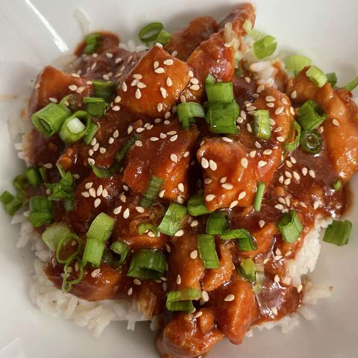

Sesame Chicken for Slow Cooker

Description
You can also cook the chicken in sauce on High for 1 1/2 to 2 1/2 hours, if you want it finished sooner.
Tip: Aluminum foil helps keep food moist, ensures it cooks evenlty, keeps leftovers fresh, and makes clean-up easy.
Ingredients
- 1 1/2 pounds skinless, boneless chicken breast halves
- 1/2 cup honey
- 1/4 cup soy sauce
- 2 tablespoons ketchup
- 2 tablespoons dried minced onion
- 1 tablespoon vegetable oil
- 1/2 teaspoon garlic powder
- 2 teaspoons cornstarch
- 3 tablespoons water
- sesame seeds to taste
Steps
- Spread chicken into the crock of a slow cooker.
- Stif honey, soy sauce, ketchup, minced onion, vegetable oil, and garlic powder together in a bowl; pour over the chicken.
- Cook on Low until the chicken is tender, 3 to 4 hours.
- Remove chicken from the sauce in the slow cooker to a cutting board. Stir water and cornstarch together to dissolve cornstartch completely; pour into the sauce in the slow cooker until smooth.
- Cook on High until slightly thickened, about 10 minutes.
- Cur chicken into bit-size pieces and stir into the sauce. Sprinkle sesame seeds over the chicken and sauce mixture.